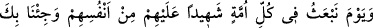
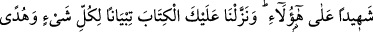
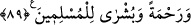
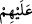

bozgunculuklar” başkalarını ifsadda devam etmeleri, Allah yolundan alıkoymaları
“sebebiyle,” inkârları yüzünden hak ettikleri “azaplarını kat kat artıracağız.” Kendi
azablarına ek olarak bir de bu azabı onlara tattıracağız.
İbn Cerir, onların azablarının artması konusunda der ki: O azab, katır büyüklüğünde
akrepler ve boynu uzun Horasan develeri kadar yılanlardır. Onlardan biri insanı
soktuğunda insan bunun kırk yıl acısını duyar. Denilir ki: Onlar, bu şiddetli sıcaklıktan
kurtulmak için kırk yıl Allah’tan yağmur isterler. Nihâyet onlara bir bulut görünür. Bu
gelenin yağmur bulutu olduğunu zannederler. Halbuki o da onlara yine yılan ve akrep
yağdırır. Bunun üzerine üzüntüleri bir kat daha artar. Çünkü hayır beklenilen yerden şer
geldiğinde keder ve üzüntü daha da şiddetlenir.
İbn Abbas ve Mukatil der ki: “Beş nehir vardır ki, ateş gibi erimiş sarı bakır
rengindedir. Arşın altından akar ve bunların üçüyle gece boyunca, ikisiyle de gündüz
süresince azab görürler.” Yâni onlar erimiş tunçtan beş ırmak tarafına giderler. Her
ırmağın başında dünya gecelerinden bir gecenin saatleri miktarınca azâb edilirler. Diğer
iki ırmakda da bu cihanın gündüzlerinden bir gündüz miktarı yine azâb görürler.
Fakir (Bursevî) der ki: Belki de bu sayının sırrı, İslam’ın beş temel esas üzerine
kurulmuş olmasıdır. Özellikle beş vakit namaz, insanın iç âlemini temizleme konusunda
dış bedenini temizlemek için akan beş nehir gibidir. İnsan bu beş temel azabı görmeleri
için, erimiş sarı bakırdan akan beş nehre çevirmiştir. Çünkü her amele uygun ceza
verilir.
89. O gün her ümmetin içinden kendilerine birer şâhid göndereceğiz. Seni de
hepsinin üzerine şâhid olarak getireceğiz. Ayrıca bu Kitab’ı da sana, her şey için bir
açıklama, bir hidâyet ve rahmet kaynağı ve müslümanlar için bir müjde olarak
indirdik.
“O gün her ümmetin içinden” yâni ey Muhammed, zikret o günü ki biz her kavmin
içinden onların mâzeretlerini tamâmen ortadan kaldıracak kendi cinslerinden
“kendilerine
birer
şâhid”
peygamber “göndereceğiz.”
Çünkü
ümmetlerin
peygamberleri kendi içlerinden gönderildi. Meselâ Lût (a.s.) onlar arasında evlenmiş
ve ikâmet etmiş, dolayısıyla onlardan olmuştu. “__WORD__ ifâdesinde peygamberlerin
ümmetlerine şâhidliğinin onların huzûrunda olduğuna işâret vardır. Bu, 84. âyette geçen
cümlenin tekrarı ve tehdidin ikiye katlanmasıdır.